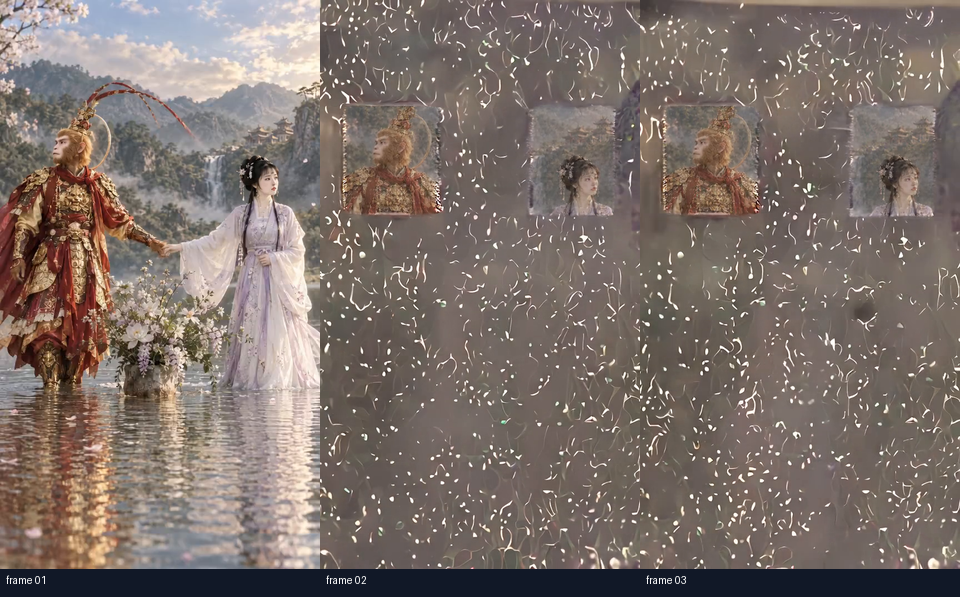
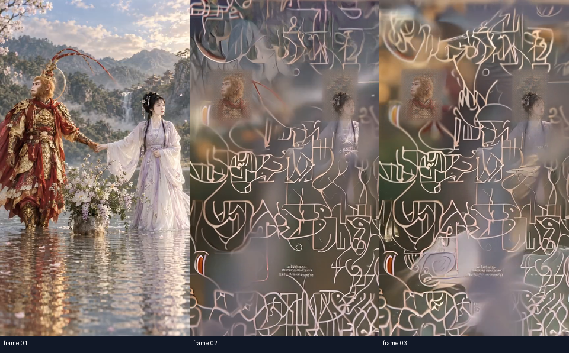
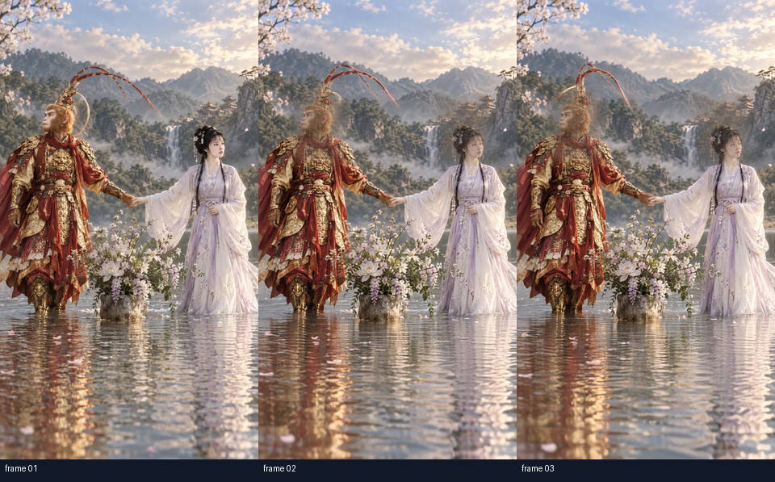
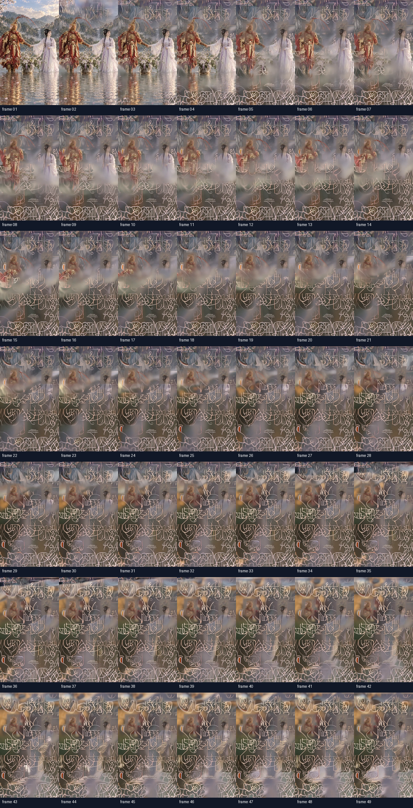
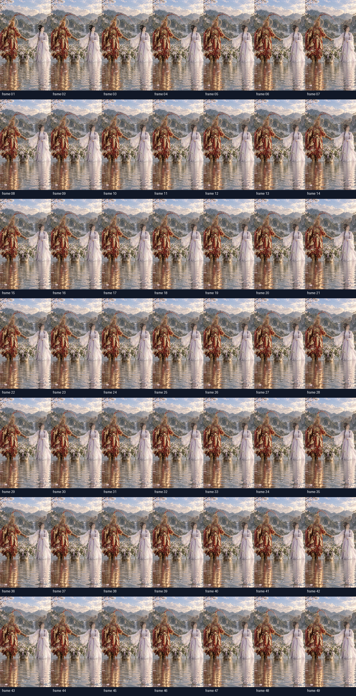

Jovi review pending. Runtime and full decode passed for take09. Please watch the full take09 clip and review identity, costume, hands/limbs, motion and scene quality. This page does not record acceptance.
Same approved source, prompts, seed, Wan2.2-TI2V-5B, dimensions, frame rate, sampler and feather ROI are used across the comparison; take09 changes the timestep-aware anchor path.
Control output: scene-wide mosaic / fixed face tiles.
Control output: softer edges, but scene-wide pseudo-text remains.
Candidate output SHA256: dbdd44e4bdd39b13c8881c3f413a7889f0823c052b99df41698b1d5f61be2db8




